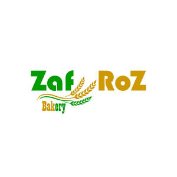

Trade Mark Journal No.2025/049 5 December 2025
UK00004300794 25 November 2025 (30,43)

- Class 30
- Bakery goods; Gluten-free bakery products; Chocolate fillings for bakery products; Pastries; Mixes for making bakery products; Macaroons [pastry]; Chocolate for confectionery and bread; Pastry; Preparations for making bakery products; Danish pastries; Viennese pastries; Dairy confectionery; Chocolate pastries; Ice-cream cakes; Flour confectionery; Frozen pastries; Pastries, cakes, tarts and biscuits (cookies); Confectionery; Almond pastries; Savory pastries; Frozen pastry; Confectionery chips for baking; Breads; Frozen dairy confections; Vegan cakes; Confectionery bars; Prepared desserts [pastries]; Chocolate confectionary; Croissants; Gluten-free bread; Pâté [pastries]; Pastries with fruit; Fruit pastries; Prepared desserts [confectionery]; Pastry dough; Fondants [confectionery]; Cake doughs; Gluten-free pizza; Pizza flour; Custards [baked desserts]; Cakes; Dough for cakes; Almond confectionery; Chocolate confectionery; Truffles [confectionery]; Frozen confectionery; Danish bread; Chocolate confectionery products; Confectionery chocolate products; Flour for doughnuts; Pizza pies; Pastry mixes; Bread doughs; Snack food products made from rusk flour; Viennoiserie; Chocolate cakes; Bread buns; Bread and buns; Fruit filled pastry products; Non-medicated flour confectionery; Danish bread rolls; Custard-based fillings for cakes and pies; Sesame confectionery; Muesli desserts; Potato flour confectionery; Bread biscuits; Cake flour; Fruit confectionery; Breakfast cake; Chocolate-based fillings for cakes and pies; Malt cakes; Shortcrust pastry; Pre-baked bread; Baguettes; Ready-to-bake dough products; Brioches; Cream cakes; Frozen cakes; Chocolate confections; Frozen yogurt cakes; Confectionery ices; Fruit breads; Frozen yogurt [confectionery ices]; Yogurt (Frozen -) [confectionery ices]; Cocoa-based ingredients for confectionery products; Long-life pastry; Cupcakes; Bread; Cake dough; Flour for baking; Lollipops [confectionery]; Frozen yogurt confections; Marshmallow confectionery; Cake bars; Chocolate desserts; Non-medicated flour confections; Nut confectionery; Doughnuts; Snack food products made from cereal flour; Pizza dough; Cheesecakes; Barm cakes; Coffee; Coffee drinks; Cappuccino; Coffee based drinks; Iced coffee; Chocolate coffee; Coffee beverages; Flavoured coffee; Beverages with coffee base; Beverages with a coffee base; Coffee pods; Instant coffee; Coffee substitutes [artificial coffee or vegetable preparations for use as coffee]; Coffee capsules; Coffee beans; Coffee extracts for use as substitutes for coffee; Ground coffee; Malt coffee; Decaffeinated coffee; Coffee based beverages; Coffee flavourings.
- Class 43
- Cafe services; Café services; Cafés; Coffee shops; Coffee shop services; Serving food and drink in Internet cafes; Bar and restaurant services; Restaurant and bar services; Providing food and drink in Internet cafes; Bistro services; Take-away restaurant services; Salad bars [restaurant services]; Coffee bar services; Serving food and drink in doughnut shops; Carvery restaurant services; Fast-food restaurant services; Hotel restaurant services; Self-service restaurant services; Providing food and drink in doughnut shops; Take-out restaurant services; Restaurant services; Restaurants (Self-service -); Self-service restaurants; Serving food and drink in restaurants and bars; Mobile restaurant services; Brasserie services; Restaurant services incorporating licensed bar facilities; Catering in fast-food cafeterias; Snack bar services; Providing food and drink in restaurants and bars; Eateries; Providing food and drink in bistros; Tourist restaurants; Delicatessens [restaurants]; Cocktail lounge buffets; Restaurants; Provision of food and drink in restaurants; Office catering services for the provision of coffee; Serving food and drink for guests in restaurants; Guesthouse; Restaurant reservation services; Restaurant services for the provision of fast food; Self-service cafeteria services; Cocktail lounge services; Lounge services (Cocktail -); Take-away food and drink services; Booking of restaurant seats; Grill restaurants; Catering of food and drinks; Takeaway food and drink services; Airport lounge services; Teahouse services; Food and drink catering; Catering of food and drink; Catering (Food and drink -); Carry-out restaurants; Providing food and drink for guests in restaurants.
Zafroz Bakery and Cafe LTD